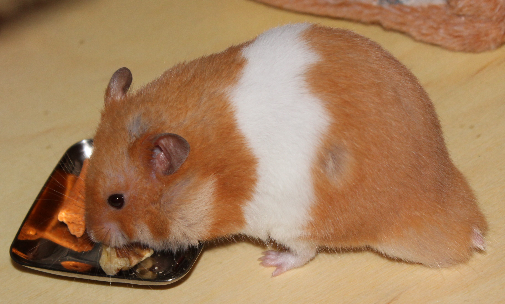
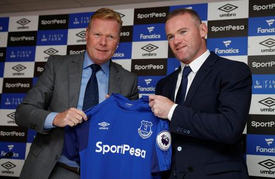

11-Jul-2017 | Milku
Not me...I'm counting the days until the football season starts.
Did you know that on 11th July 1900, Charlotte Cooper beat Hélène Prévost to become the first female Olympic tennis champion. Indeed, she was the first individual female Olympic champion in any sport. In her career, Charlotte won five singles titles at the Wimbledon Championships too. And she was English.
Maybe it's an omen and Johanna Konta will win Wimbledon this year. The media are already reporting that Britain has got men's and women's quarter-finalists at Wimbledon for the first time since 1973...after yesterday's wins for Andy Murray and Johanna Konta.
I wish I could get excited about it all, but really I'm more interested in what's happening in the world of football. At the moment, I can't quite decide if I like the idea of Wayne Rooney returning to Everton. But once he's scored for the team again, I'm sure any doubts will vanish. I'm fickle that way.
